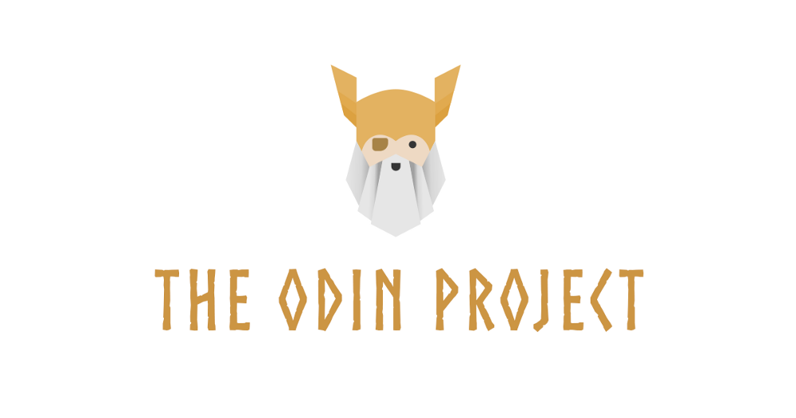
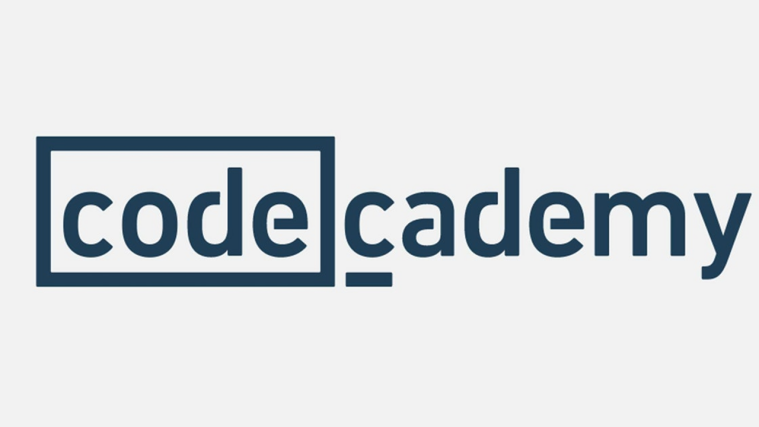
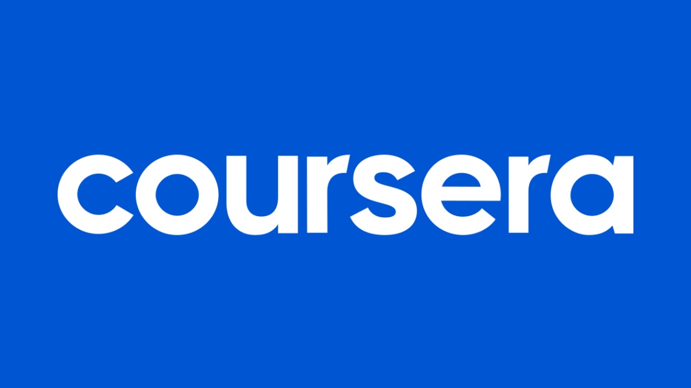
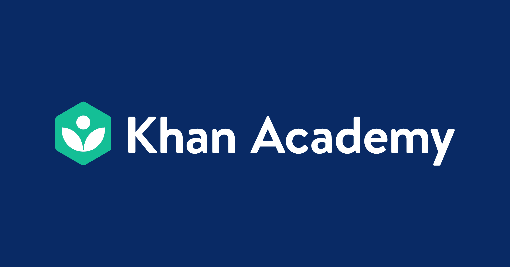

Cursos Gratuitos em Programação 📚
Aprenda a programar com os melhores cursos gratuitos de programação. Aqui você
encontra
cursos de Python, JavaScript, Java, C#, HTML, CSS e muito mais. Aproveite para aprender a programar de forma
gratuita e se tornar um desenvolvedor de sucesso.

O The Odin Project é uma plataforma gratuita que oferece um currículo completo para quem deseja se
tornar um desenvolvedor web full-stack. O conteúdo abrange desde os fundamentos da programação até
tópicos avançados, incluindo front-end, back-end e frameworks modernos.
🎓 Áreas de conhecimento:
- Lógica de Programação ✅
- Desenvolvimento Front-End 💻
- Desenvolvimento Back-End 🛠
- Git ⚙
- JavaScript 💻
- HTML 📄
- CSS 🎨
- Ruby 💎
⬇ Passo a passo para a inscrição:
- Acesse o site oficial do Odin
Project
- Clique em "Get Started"
- Siga as instruções para criar uma conta e começar o curso

O Codecademy é uma plataforma de ensino de programação que oferece cursos gratuitos e pagos em
diversas linguagens de programação. A plataforma é ideal para quem deseja aprender a programar
dozero ou aprimorar suas habilidades em áreas específicas, como desenvolvimento web, ciência de
dados e machine learning.
🎓 Áreas de conhecimento:
- Python 🐍
- JavaScript 💻
- Java ☕
- HTML 📄
- CSS 🎨
- SQL 📊
- Ruby 💎
- PHP 💻
⬇ Passo a passo para a inscrição:
- Acesse o site oficial do Codecademy
- Crie uma conta gratuita ou faça login com o Google ou Facebook
- Escolha o curso desejado e comece a aprender

O freeCodeCamp é uma plataforma de ensino de programação que oferece cursos gratuitos em diversas
áreas, como desenvolvimento web, ciência de dados, machine learning e programação funcional. A
plataforma é ideal para quem deseja aprender a programar de forma prática e interativa, com projetos
reais e desafios diários.
🎓 Áreas de conhecimento:
- HTML 📄
- CSS 🎨
- JavaScript 💻
- React 🚀
- Node.js 💻
- D3.js 📊
- Express.js 🛠
- MongoDB 💾
⬇ Passo a passo para a inscrição:
- Acesse o site através do link: freeCodeCamp 🎓
- Clique em "get Started(it's free)" para criar uma conta
- Cadastre-se utilizando seu e-mail, conta do Google ou GitHub.
- Após o cadastro, você será direcionado ao currículo, onde poderá iniciar os cursos projetos.
O MIT OpenCourseWare é uma plataforma de ensino online que oferece cursos gratuitos de diversas áreas
do conhecimento, incluindo ciência da computação, engenharia, matemática e física. Os cursos são
ministrados por professores renomados do MIT e abrangem desde os conceitos básicos até tópicos
avançados em programação e desenvolvimento de software.
🎓 Áreas de conhecimento:
- Introdução à Ciência da Computação 🎓
- Algoritmos e Estruturas de Dados 🔢
- Desenvolvimento Web 💻
- Inteligência Artificial 🤖
- Segurança da Informação 🔒
- Engenharia de Software 🎓
- Programação em Python 🐍
- Programação em Java ☕
⬇ Passo a passo para a inscrição:
- Acesse o site oficial do MIT
OpenCourseWare
- Escolha o curso desejado na lista de disciplinas disponíveis
- Leia as instruções e comece a estudar
- Não é necessário cadastro; todo o conteúdo está disponível para acesso livre.

O Coursera é uma plataforma que oferece cursos online de diversas instituições renomadas
mundialmente. Embora muitos cursos sejam pagos, há uma variedade de cursos gratuitos disponíveis,
especialmente para quem deseja aprender programação e áreas correlatas.
🎓 Áreas de conhecimento:
- Lógica de Programação ✅
- Desenvolvimento Front-End 💻
- Desenvolvimento Back-End 🛠
- Ciência de Dados 📊
- Machine Learning 💻
- Redes de Computadores 🌐
- Segurança da Informação 🔒
⬇ Passo a passo para a inscrição:
- Acesse o site através do site oficial Coursera 📖
- Utilize a barra de pesquisa para encontrar cursos de interesse ou navegue pelas categorias
disponíveis
- Ao encontrar o curso de interesse, clique nele para ver os detalhes
- Clique em "Inscreva-se gratuitamente" ou "Enroll for free"
- Cadastre-se utilizando seu e-mail ou conta do Google
- Alguns cursos oferecem a opção de "Auditar" gratuitamente; selecione essa opção para acessar o
conteúdo sem custo

A Khan Academy é uma organização educacional sem fins lucrativos que disponibiliza cursos gratuitos
em diversas áreas, incluindo programação e ciência da computação. Seu foco é oferecer ensino
acessível e de qualidade para qualquer pessoa, em qualquer lugar, utilizando uma abordagem prática e
interativa.
🎓 Áreas de conhecimento:
- Introdução à Programação
- Algoritmos e Estruturas de Dados 🔢
- Desenvolvimento Web 💻
- Inteligência Artificial 🤖
- Programação em Python 🐍
- Programação em JavaScript 💻
- Programação em Java ☕
- Programação em C++ ⚙
- Desenvolvimento de Software 🎓
⬇ Passo a passo para a inscrição:
- Acesse o site através do site oficial Khan Academy
- Clique em "Comece a aprender" ou navegue até a sessão de Ciência da Computação
- Escolha um curso de interesse e clique nele para começar
- Para salvar seu processo, crie uma conta utilizando seu e-mail, Google ou Facebook
- Após o cadastro, você pode acompanhar seu progresso e explorar outros cursos disponíveis.